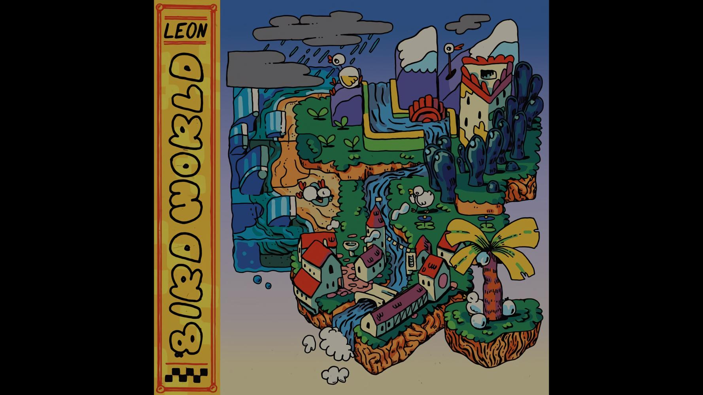
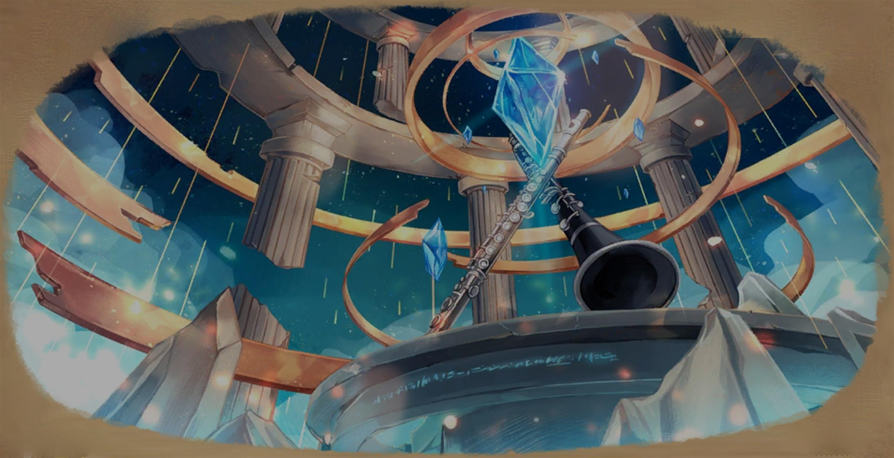
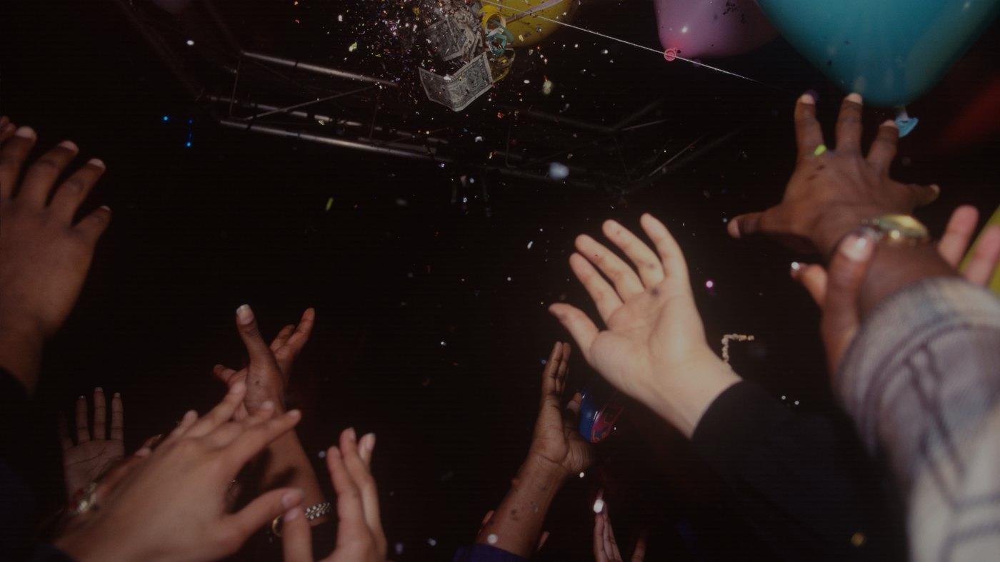
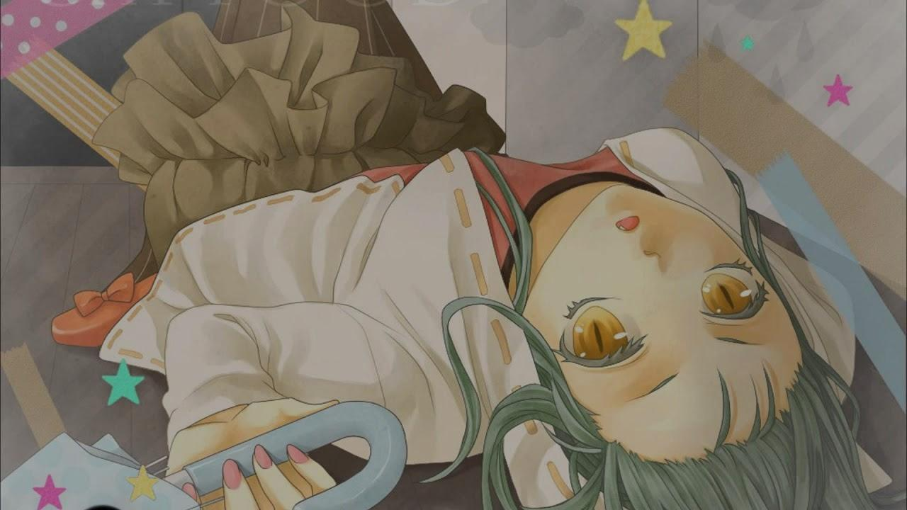

6.15
NM
NM
Letters to me
天月
Mapper: Kirishima-
Difficulty: Maaadbot's Extra
Beatmap ID: 2838621
CS
4
AR
9.2
OD
8.8

190.0

3:40

1281
6.16
NM
NM
We Got It (feat. Rothwell)
Metrik
5.85
NM
NM
雨上がり、夏の距離。
すいそうぐらし
![Getty - B WiZ U (Cubby) [0pp x ohm's extra]](./darkened-backgrounds/4540987.jpg)
5.63
NM
NM
B WiZ U
Getty

5.47
NM
NM
popcorn castle
leon chang

5.48
HDDA*
HD; DA(circle_size=4.2,approach_rate=9.3)
Song for Sprites
Sta
4.96
HD
HD
まつり
藤井 風
Mapper: AirinCat
Difficulty: Kyouren's Extravaganza
Beatmap ID: 4018779
CS
4.2
AR
8.0
OD
8.8
97.0
3:42
1217

6.16
HR
HR
The First Time I Met Sanawon
Bomb the Music Industry!
5.82
HR
HR
華爛漫 -Flowers-
TËЯRA
Mapper: Sunazuka Akira
Difficulty: sakura fubuki
Beatmap ID: 3615469
CS
6.5
AR
10.0
OD
10.0
160.0
1:40
654

6.25
DT
DT
キャットフード
doriko
6.26
DT
DT
Beethoven Virus
DIANA
5.16 (5.53)
F+
F+
Pee (feat. convex and ilia)
Is